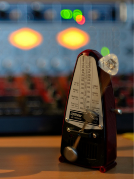

幫助你的學習資訊
-

Mar 23 1 min
來談談慢歌的8 beat節奏慢歌的特徵有以下： 俗稱：抒情歌、芭樂歌(Ballad)、民謠、Slow Soul… 在4/4拍的音樂中，會以八分音符為主要構成要素 ...
853 views 0 comments 31 -

Mar 23 1 min
什麼是三和弦?三和弦分成大三和弦(Major)及小三和弦(Minor)， 大三和弦（表示方式有：Cmaj、C∆、CM） 聽起來的感覺是明亮、正面的 組成音：根音、大三度 ...
304 views 13 comments 31 -

Mar 23 2 min
彈奏吉他時，會提到的重音和輕音是什麼呢？先來看看在吉他譜上重音和輕音的表示方式， 重音會是一個X的符號， 表示只刷4、5、6弦。 ＊重音會根據和弦的根音有所調整喔！ 例如：C和弦的重音 ...
206 views 0 comments 12 -

Mar 23 1 min
來和威仔一起單音練習吧！Step1: 先用自己隨意的速度彈奏練習 Step2: 嘗試用腳打節拍（4beat節奏） →以一小節4拍為單位練習 →通常會使用左腳打節拍，避免影響吉他的彈 *bpm：beat per minute ...
185 views 0 comments 11 -

Mar 23 1 min
工欲善其事，必先利其器！吉他(Guitar)是一種彈撥樂器，通常有六條弦， 主要分為三個部份：琴身、琴頸、琴頭 ...
304 views 13 comments 31 -

Mar 23 2 min
學吉他的理由是什麼呢？不知道大家想學吉他的理由是什麼呢？ 是熱愛表演、想自彈自唱、 想告白、培養興趣、 想組團或是為了追隨偶像呢？ 威仔是因為喜歡唱歌， ...
206 views 0 comments 12 -

Mar 23 1 min
pick來練習正反拍彈奏首先來教大家pick的握法， 1.pick的上緣（平緩的那側）要對齊大拇指內側 2.用食指捏住，食指指尖可以向內或向 ...
185 views 0 comments 11